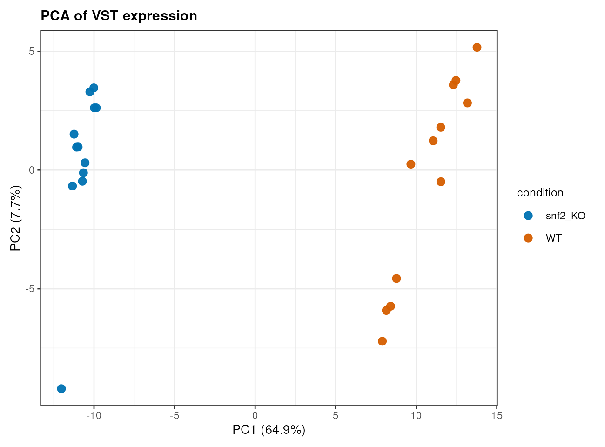
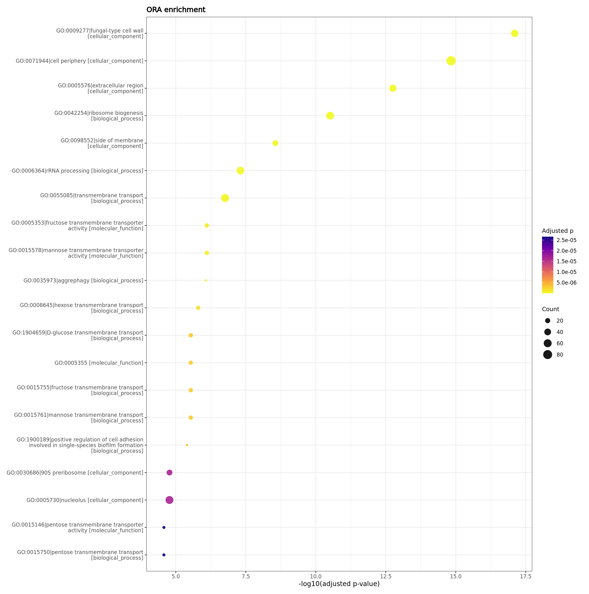

Sample correlation样本相关性
Live Example在线示例
A 24-sample no-reference example generated by rnaseq-standard-flow 0.3.0-r1 and collected by rnaseq-report-flow 0.3.0-r2. It starts from FASTQ, assembles a transcriptome, quantifies against the assembled transcripts, annotates transcripts through homology, and then continues through DE, enrichment, and reporting.
这是由 rnaseq-standard-flow 0.3.0-r1 生成、由 rnaseq-report-flow 0.3.0-r2 收集的 24 样本无参示例。它从 FASTQ 出发，先组装转录组，再基于组装转录本定量，通过同源信息注释转录本，随后继续完成差异表达、功能富集和报告生成。
The de novo route answers a different question from the reference route. Instead of asking how reads support known genes in a known annotation, it asks whether a usable transcriptome can be assembled from the reads, how much each assembled transcript is expressed, and which transcript-level features change between WT and SNF2KO samples.
无参路线回答的问题和有参路线不同。它不是直接问 reads 如何支持已知注释中的基因，而是先问能否从 reads 组装出可用转录组，再问每个组装转录本表达量如何，以及 WT 与 SNF2KO 之间哪些转录本层面特征发生变化。
Sample correlation样本相关性

PCA structurePCA 样本结构

Annotation-derived enrichment注释派生富集
The report collector found 6 modules, 109 collected files, 54 embedded tables, 28 plot files, and 27 embedded HTML/QC reports. The feature space is transcript-level unless an explicit tx2gene or cluster mapping is supplied.
报告收集器发现 6 个模块、109 个收集文件、54 个内嵌表格、28 个图文件和 27 个内嵌 HTML/QC 子报告。除非显式提供 tx2gene 或聚类映射，否则这里的特征空间是转录本层面。